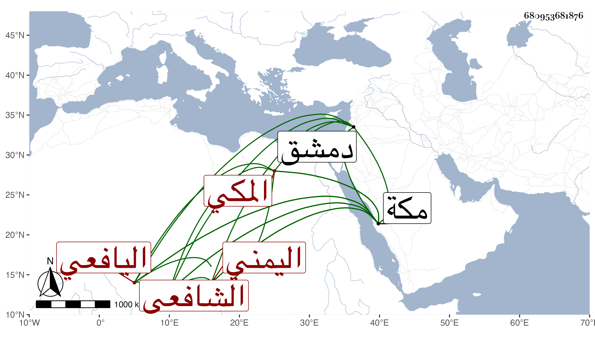

0902Sakhawi.DawLamic.ITO20230111-ara1.EIS1600.680953681876
Biography ID: 680953681876
382
عبد الوهاب بن عبد الله بن أسعد بن علي بن سليمان بن فلاح التاج أبو محمد بن الولي الشهير العفيف أبي محمد اليافعي اليمني ثم المكي الشافعي أخو زينب الآتية وعبد الرحمن الماضي ووالد محمد الآتي . ولد سنة خمسين بمكة وسمع بها من أبيه وخالتيه أم الحسن وأم الحسين ابنتي أحمد بن الرضي الطبري والجمال الأميوطي وأبي الفضل النويري القاضي ومحمد بن أحمد بن عمر بن النعمان في آخرين وبدمشق من ابن أميلة البعض من الترمذي ومن مشيخة الفقه وتفقه بالأميوطي والأبناسي وغيرهما وتميز وأذن له الأبناسي بالإفتاء والتدريس سنة إحدى وثمانمائة وتصدى للأشغال بالمسجد الحرام مدة سنين ، وأفتى قليلا لكن باللسان غالبا وكان ذا فضيلة في الفقه وعبادة وديانة وآداب حسنة من مزيد ورع وسيرة جميلة وارتفاق بالتكسب في أمر عياله ، ناب في الإمامة بالمقام في بعض الأوقات عن خاليه واستفاد من التكسب دنيا وتبرك الناس بدعائه . مات في رابع رجب سنة خمس بمكة وصلى عليه من الغد تقدم الناس خاله الإمام أبو اليمن الطبري ودفن على أبيه تحت رجلي الفضيل بن عياض من المعلاة ، وممن أخذ عنه التقي بن فهد ، وذكره شيخنا في إنبائه باختصار فقال كان خيرا عابدا ورعا قليل الكلام فيما لا يعنيه أم بمقام إبراهيم نيابة اجتمعت به وسمعت كلامه ، والمقريزي في عقوده وأنه اجتمع به بمكة في موسم سنة تسعين ونعم الرجل يتورع في كلامه عما لا جناح فيه وقوله أنه مات عن خمس وأربعين غلط من خمس وخمسين رحمه الله وإيانا .
